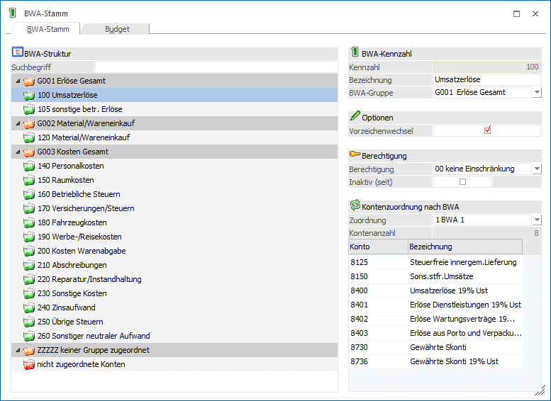
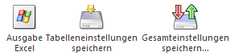
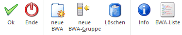

Im Menüpunkt
1 Stammdaten
1 BWA-Stamm
werden die Betriebswirtschaftlichen Kennzahlen definiert.
Direkt im Kontenstamm können bis zu drei BWA hinterlegt werden. Diese ermöglichen es, verschiedene Auswertungen nach BWA-Nummern zu selektieren.
Die Darstellung des BWA-Stamms als Baumstruktur lässt auf einen Blick BWA-Gruppe, BWA und zugeordnete Konten erkennen.
Kontenzuordnungen und BWAs können einfach per Drag & Drop verschoben werden.

BWA-Gruppe
Ø Gruppennummer
Eingabe einer 5-stelligen, alphanumerischen BWA-Gruppennummer.
Bezeichnung
Eingabe der 35-stelligen BWA-Gruppenbezeichnung
BWA-Kennzahl
Ø Kennzahl
In WinLine haben Sie die Möglichkeit bis zu 999 verschiedene Betriebswirtschaftliche Kennzahlen zu definieren. Um eine bestehende BWA zu bearbeiten, wird die BWA in der BWA-Struktur aktiviert.
Neue BWAs werden über den Button "neue BWA" angelegt.
Ø Bezeichnung
35stellig, alphanumerisch. Eingabe der BWA-Bezeichnung.
Ø BWA-Gruppe
Aus der Auswahllistbox kann jene Gruppe gewählt werden, der die BWA zugeordnet werden soll. Ist noch keine Gruppe hinterlegt, wird das auch entsprechend angezeigt (0000 Keine Gruppe ausgewählt).
Anhand dieser Gruppe wird in der BWA-Liste automatisch nach Andruck der BWA eine Zwischensumme berechnet und angedruckt.
Ø Vorzeichenwechsel
Ist diese Checkbox aktiviert, wird bei der Summe dieser BWA das Vorzeichen umgedreht.
Beispiel
Alle Erlöse werden im Haben gebucht. Daher wird die Summe der Erlöse auch negativ dargestellt. Setzt man nun das Kennzeichen "Vorzeichenwechsel", wird die Summe der Erlöse positiv dargestellt.
Ø Berechtigung
Für jede BWA kann ein Berechtigungsprofil vergeben werden. Wenn der Anwender eine BWA aufruft, wird geprüft, ob der Anwender einer Benutzergruppe zugeordnet wurde, welche in dem jeweiligen Profil enthalten ist und ob somit eine Bearbeitung erlaubt wäre (nähere Informationen entnehmen Sie bitte dem WinLine ADMIN - Handbuch).
Hinweis
Benutzern des Typs "Administrator" oder mit der Administratorenberechtigung "Benutzeradministrator" steht in der Auswahlbox der Punkt ">> Neues Profil" zur Verfügung. Über die Anwahl dieses Eintrags kann in der Folge ein neues Berechtigungsprofil angelegt werden.
Ø Inaktiv
Wenn ein Datensatz auf Inaktiv gesetzt wird, hat das vorerst nur die Auswirkung, dass er nicht mehr im Matchcode angezeigt wird. Durch einen Reorg kann dieser Datensatz aus der Datenbank entfernt werden. Voraussetzung dafür ist, dass für den Datensatz keine Bewegungsdaten (Buchungen etc.) vorhanden sind. Nähere Informationen zum Reorganisieren entnehmen Sie bitte dem WinLine START-Handbuch.
Kontenzuordnung nach BWA
Ø Zuordnung
Aus der Auswahllistbox kann die BWA ausgewählt werden, welcher die Konten zugeordnet werden sollen. Zur Verfügung stehen…
ü BWA 1
ü BWA 2
ü BWA 3
Ø Kontenanzahl
Das Informationsfeld Kontenanzahl gibt Auskunft darüber, bei wie vielen Konten die aktive BWA bereits hinterlegt ist.
Ø Konto / Bezeichnung
Es werden in der Tabelle alle dieser BWA zugeordneten Konten angezeigt.
Per Drag & Drop können Konten auf eine andere BWA in der BWA-Struktur verschoben werden.
Sollen Konten keiner BWA zugeordnet werden, müssen sie in die BWA "nicht zugeordnete Konten" verschoben werden.
Wenn noch nicht zugeordnete Konten einer BWA zugeordnet werden sollen, werden diese aus der BWA "nicht zugeordnete Konten" auf die gewünschte BWA per Drag & Drop gezogen.
Hinweis
Die BWA-Gruppe "ZZZZZ keiner Gruppe zugeordnet" und die BWA "nicht zugeordnete Konten" wird automatisch mit allen Konten gefüllt, die keiner BWA zugeordnet sind.
Diese BWA-Gruppe und BWA kann nicht bearbeitet und auch nicht gelöscht werden.
Tabellenbuttons - Kontenzuordnung nach BWA

Ø Ausgabe Excel
Der Inhalt der Fakturentabelle kann in eine Excel-Tabelle ausgegeben werden.
Ø Tabelleneinstellungen speichern
Die Spalten einer Tabelle können grundsätzlich an beliebige Positionen verschoben, bzw. in der Breite entsprechend angepasst werden. Durch Anwahl des Buttons "Tabelleneinstellungen speichern" werden die Einstellungen benutzerspezifisch gespeichert und bei dem nächsten Aufruf des Programmpunktes wieder vorgeschlagen.
Ø Gesamteinstellungen speichern
Im Gegensatz zu "Tabelleneinstellungen speichern" können mit "Gesamteinstellungen speichern" mehrere Tabellenaufbauten gespeichert und nach Wunsch geladen werden. Zusätzlich werden Sonderfunktionen der Tabelle (z.B. "Spalte gruppieren") ebenfalls bei der Speicherung bedacht.
Durch Anklicken des Registers "Budget" kann für jede BWA ein Budget erfasst werden.
Buttons

Ø OK
Durch Drücken des OK-Buttons oder der F5-Taste werden alle Änderungen im BWA-Stamm gespeichert.
Ø Ende
Durch Drücken des Ende-Buttons (der ESC-Taste) wird das Fenster geschlossen.
Ø neue BWA
Über diesen Button kann eine neue BWA angelegt werden.
Ø neue BWA-Gruppe
Über diesen Button kann einen neue BWA-Gruppe angelegt werden.
Ø Löschen
Durch Anwahl des Löschen-Buttons wird die aktuelle BWA-Gruppe oder BWA gelöscht. Voraussetzung dafür ist, dass die BWA bei keinem Konto mehr hinterlegt ist.
Ø Info
Durch Anklicken des Info-Buttons wird eine Übersicht über die bereits gebuchten Werte der aufgerufenen BWA angezeigt.
Ø BWA-Liste
Durch Anklicken dieses Buttons wird der Menüpunkt "BWA-Liste" geöffnet.